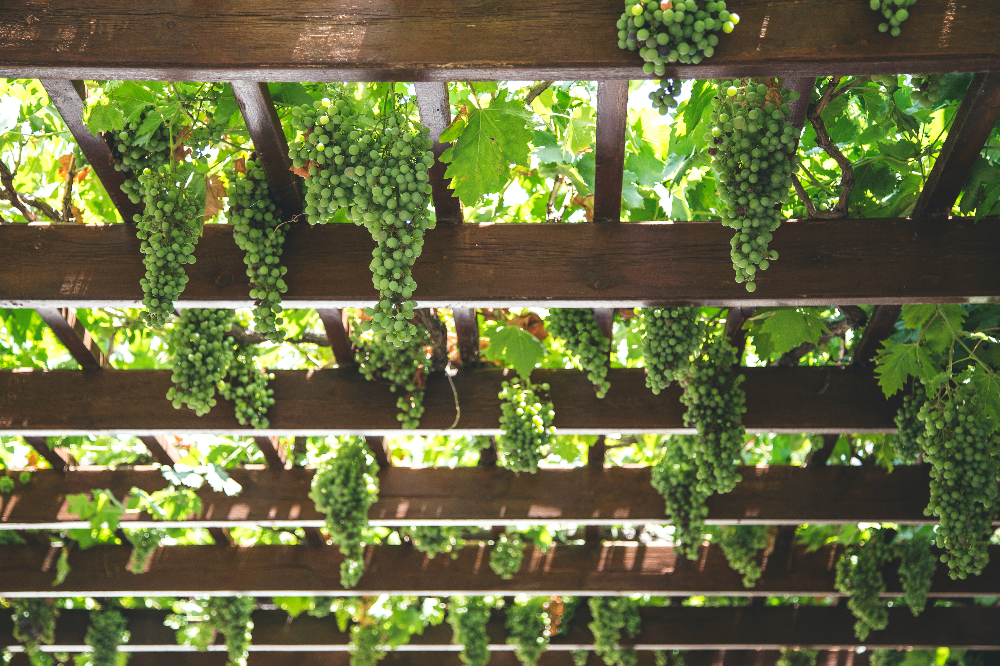
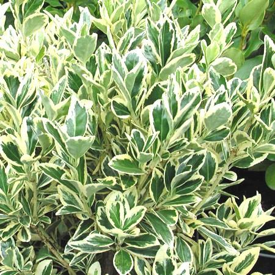
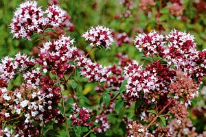
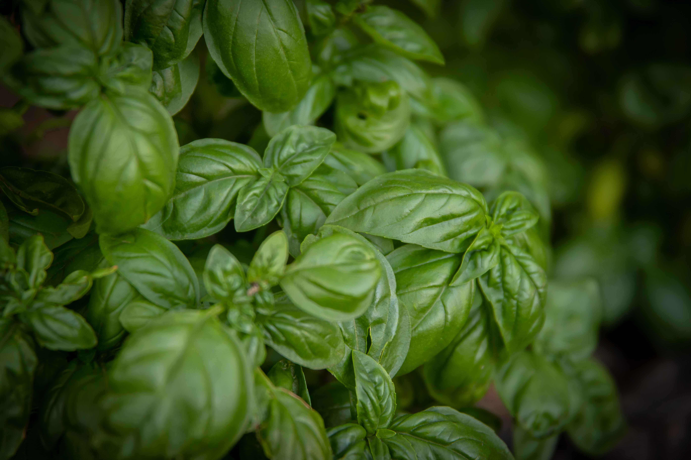

Les végétaux à réserve

On trouve dans cette famille des végétaux qui possèdent bulbes, oignons, griffes, rhizomes ou tubercules. A titre d'exemples, vous trouverez les tulipes, jacynthes, narcisses, jonquilles, glaeïuls, anémones, iris, arums, muguet dahlias, muscaris, crocus...
Côté légumes : ails, échalottes, poireaux et bien sûr, les pommes de terre !
Avantages : ces variétés peuvent se laisser sur place et repoussent chaque année !!!
Les couvre-sol

La nature a horreur du vide !!! Plutôt que de laisser les mauvaises herbes envahir cet espace, vous pouvez utiliser des plates couvrantes. Elles limitent l’entretien d’une zone de jardin difficile d’accès par exemple ou pour couvrir aux pieds d’arbres, de rosiers. On trouve des aubriettes, campanules, sedum, ciste rampant, millepertuis, oeillet à delta, oxalis,...
Elles peuvent se laisser sur place et repoussent chaque année !!!
Les plantes grimpantes
Il existe différentes variétés, avec ou sans fruits. Tout dépend du lieu où vous voulez mettre vos plantes... en fruitier, vous aurez la possibilité de mettre de la vigne ou des kiwis (mâles et femelles ou autofertiles). Côté fleurs, les clématites, chèvrefeuilles, glycines, jasmins, lierres sauront vous convaincre par leurs fleurs magnifiques et/ou leur parfum envoutant!!!
Elles permettent de créer une pergola, cacher une gouttière.
Plantes à feuillage persistant
Ce sont des plantes qui gardent leur feuille tout au long de l’année. Il existe aujourd'hui des variétes aux couleurs variées. On peut citer : agapanthe, badiane, sauge, romarin, fusain, lavande, photinia, laurier saulce, osmanthe burkwoodii, astelia, euphorbe,...
Ces plantes sont parfaites pour créer des haies, des bordures ou des massifs.
Les plantes pour les insectes
Elles favorisent la biodiversité et favorisent la pollinisation en attirant les abeilles, bourdons et autres papillons essentiels pour la nature et votre jardin ! Pensez à mettre de la lavande, chèvrefeuille, giroflée, grande marguerite, romarin, reine des près, pavot de californie...
Ces plantes sont essentielles pour le jardin !!! Alors ne les oubliez-pas!!!
Les plantes répulsives
On retrouve différentes variétes commme le pélargonium odorant(contre les moustiques, mouches et guêpes), basilic (contre les mouches, moustiques, fourmis), la mélisse (contre les fourmis et les moustiques),...
Traitement naturel contre certains prédateurs, ces plantes sont à privilégier !!!